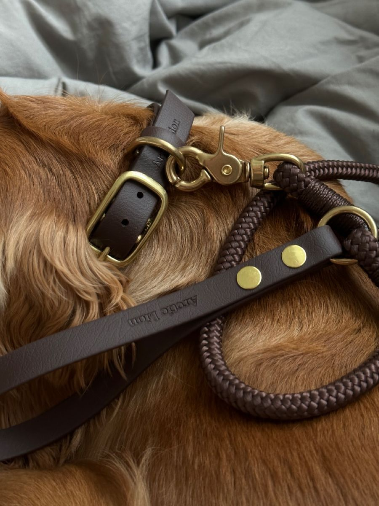

Primeros días en casa
Guía para los primeros días con tu perro
Consejos simples para ayudar a tu mascota a adaptarse a su nuevo hogar con calma, seguridad y una rutina clara desde el comienzo.
Comenzar guía
Explora nuestras secciones
El sitio está dividido por temas para que puedas navegarlo con más claridad.
Video
Momentos de adaptación
Observar momentos tranquilos y positivos ayuda a entender mejor cómo acompañar la adaptación de un perro.